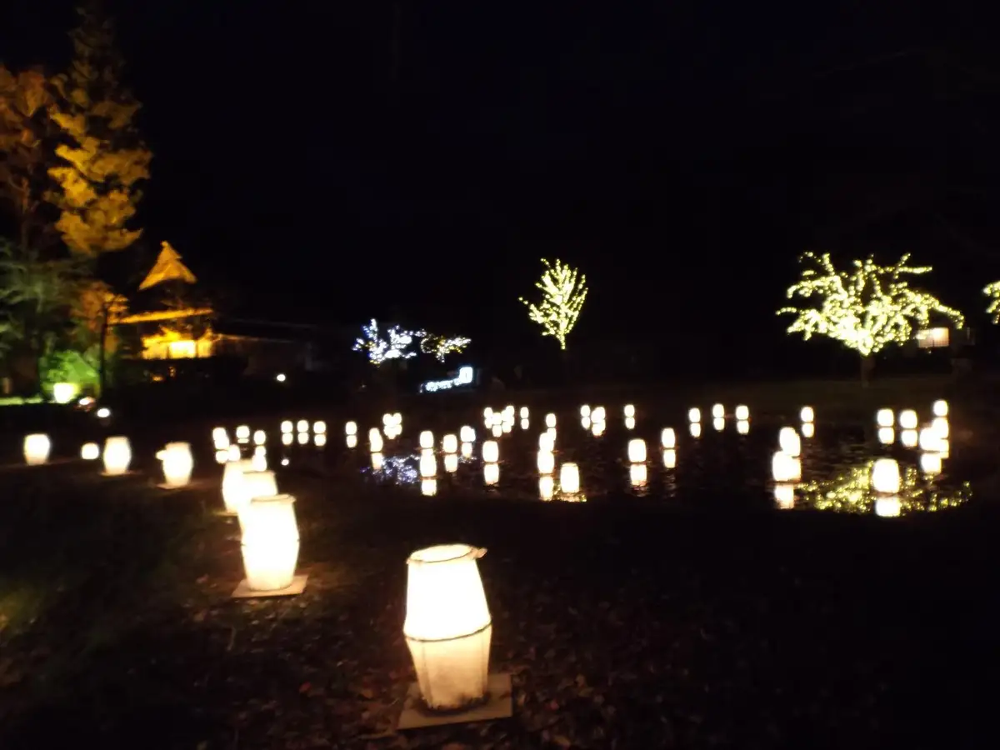
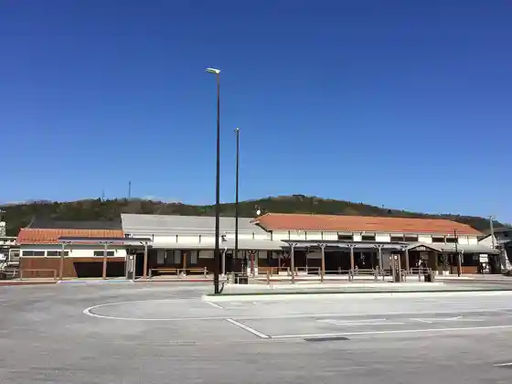
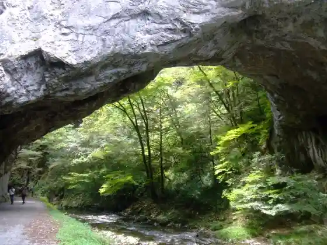
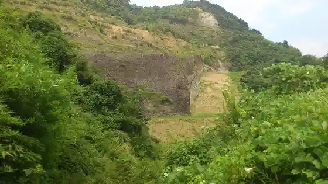
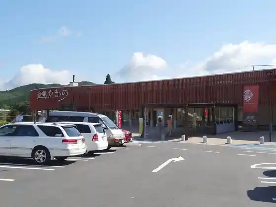

Shobara
Shobara · Hiroshima
Shobara
Highlighted on the Hiroshima map.

Stay
Shobara Gu Land Hotel
Taishakukyo Kanko Hotel Bekkan Yoko So
Hotel Hiba So
Setochi Ko Minka Suteizu Hiroshima Kozako Mori
Oka no Sato Ra Fore Shobara
Taishakukyo Kanko Hotel Nishiki Sai Kan
Kyuka Village Taishakukyo
Dining
Ashibi
Boa
Sake Raku
Taka no Kitchin
Soba Tokoro Mi no Ri
Izanami Chaya
Isa Aji
Tezu Kuri Kobo Amisshu
Seikatsu Ya
Ra Arezu
Andokafe
Tabo
Pandora
Bureddohausu Shobara Mise
Fukufuku Ranch no Chiizu Workshop
Ariitaimu
Onsen
Oka no Sato Ra Fore Shobara Public Bath
Kyuka Village Taishakukyo Honkan Public Bath (Samoyama Baths)
Taishakukyo Kanko Hotel Nishiki Sai Kan Rotemburo
Taishakukyo Kanko Hotel Bekkan Yoko So Public Bath
Sights
Kokuei Bihoku Kyuryo Park
Bingo Shobara Eki

Osu Hashi

Hiba Yama

Roadside Station Taka no
